 CCHI Spatial Image Catalog
CCHI
Michigan Tech Archives
Exclude Large Area Images
Using the application
Click anywhere on the map to see images for that location. OR use the search bar to locate images by keyword. OR use the
Search Here
button to locate images within the current map extent.
Take a Tour
Search Here